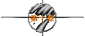
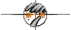

※第一次的亲密接触※
written by jht.

今天终于收到他寄的第二封mail..我有如获至宝的感觉..
我将他的mail看了一遍又一遍..
心里既踏实..又兴奋..:)
突然好想喝一杯香浓的Cappuccino....
※
发信人： FlyinDance (轻舞飞扬)
标 题： 1997/10/10
日 期： Fri Oct 10 23:53:26 1997
中华民国又过生日了..为了表示我有忠贞爱国之心..
我特地睡到下午两点多..
其实都怪那只青蛙啦！..上线时间总是在三更半夜..
不..正确的说法应说是在四更尾..
昨晚特地等他的..我还跟亲爱的上帝祷告..希望能遇见一只青蛙..
等到凌晨两点左右..不小心就睡著了..Idle了40分钟..就被踢下站了..
更气的是..他就在三点上线..然后寄给我第6封mail..
他说希望我在中华民国的生日里..比中华民国还快乐..
快乐个头！..难道他不知道有军机坠机了吗？..
刘备对孔明也只不过是三顾茅庐..
而我已经顾到连茅庐都会不好意思了..
他这只笨青蛙..没事干嘛学孔明呢？..
唉...也许我的名字叫白天..而他的名字却叫黑夜吧！..
收音机里刚好传来黄小琥唱的“不只是朋友”..
或许我也是如此..我想要的“不只是mail”..
我的青蛙王子..你的生活作息能不能正常一点呢？..
今天是台湾光复的日子..
但我的心..却开始沦陷了....
※
发信人： FlyinDance (轻舞飞扬)
标 题： 1997/11/08
日 期： Sat Nov 8 23:36:42 1997
今天是他从香港回来的日子..
他上封mail只告诉我说要去香港..但没说去几天..
没想到一去就是五天..
而且当我看到mail时..他已经在泰航往香港的班机上了..
我其实是很生气的..因为我不知道他什么时候会回来？..
昨天上线时..看到他的上站次数还是没增加..
死痞子..臭青蛙..你到底回不回来嘛？..:(
所以刚刚上线收到他的mail时..我竟然忍不住哭了出来..
他说他去了很多地方..包括太平山和维多利亚港..
他还说太平山上的星星一定没有我的眼睛明亮..
而维多利亚港的灯光也一定没有我的笑容灿烂..
哼！..出去玩了这么多天..就想凭这两句甜言蜜语打发我？..
而且他没看过我..又怎会知道呢？..
搞不好我的长相比太平山上的猴子还要恐怖..
而我的笑声比维多利亚港轮船的汽笛声还要刺耳呢！..:~
不过..看在他乱猜竟也猜对的面子上..
我也就不忍苛责了..：）
他说今天是长江三峡进行截流合龙工程的日子..
这在他们水利工程界..是件空前的大事..
我才不管什么是截流或合龙ㄌㄟ..:(
我在意的是..他跟我何时才能“合流”？..
不再像两条平行流动的河流般..永远没有汇流点...
※
发信人： FlyinDance (轻舞飞扬)
标 题： 1997/11/13
日 期： Thu Nov 13 23:33:56 1997
幸好今天是星期四□只差一天就是黑色星期五□好险□:)
他早上的mail说□今天是个非常特别的日子□
为何特别？□他倒是没说□
难道是他生日？□也许是吧！□
在这种日子出生确实是没什么好骄傲的□所以也难怪他不敢说□:P
他还说他很欣赏我的plan□为了庆祝这个特别的日子□
所以他改了几句：
“ 我大声地咆哮，在寂静的教室之中。
你投射过来异样的眼神。
同情也好，不爽也罢。
并不曾使我的声音变小。
因为令我度烂的，不是你注视的目光。
而是我被当的流力。
”
我的手扶著桌角□笑出了眼泪□不知道这算不算是“喜极而泣”？□
哼！□竟敢乱改我的plan□:(
此仇不报非淑女□我下次也要改他的plan□
而且一定要让他流下更多的眼泪□:P
他到底为什么会觉得今天特别？□
对他而言，什么样的日子才叫特别？□
其实对我而言，每个收到他mail的日子，都很特别□
※
发信人： FlyinDance (轻舞飞扬)
标 题： 1997/11/23
日 期： Sun Nov 23 23:58:06 1997
今天一大早，小雯开著她那辆红色喜美，载我到垦丁去玩□:)
我穿著一整套咖啡色系的衣服□还背上我的Cappuccino□
小雯骂我神经□那有人这样穿的？□她笑我中了咖啡的毒了□
可我就是喜欢□:P
垦丁公园真的好美□可惜有些人为的匠气□
不如社顶公园的浑然天成□
我在社顶公园那片大草原上□留下了我的影子□
小雯说从照相机的镜头里看过去□就好像看到了一杯咖啡□
呵呵□这就是我要的感觉□:)
有两个男生过来搭讪□
他们说：今天的天气很好叫sunny□两位小姐很美丽叫beauty□
气质也非常动人叫pretty□若能与你们共游则会很快乐叫happy□
小雯则回答说：天气突然变差了叫rainy□两位先生长得不怎么样叫ugly□
看到你们我开始不爽叫angry□再不快走老娘就会抓狂叫crazy□
呵呵□我怎么会有小雯这样的好友呢？□:)
更难得的是□我仍然能出淤泥而不染□保持我的温柔本性□:P
今天真的好高兴□天气好、风景好、小雯在我身旁更好□：）
虽然回到台南已经很累了□我还是上线写下今天的心情□
也收到了他寄来的第20封mail□今天真好□从头到尾都是□:)
希望他也很好□如果他不好的话□我分一点好给他□:~
※
发信人： FlyinDance (轻舞飞扬)
标 题： 1997/12/03
日 期： Wed Dec 3 23:19:46 1997
妈昨晚又打电话来劝我办理休学□
怎么可能嘛！□这是我大学时代的最后一年□就这么放弃不是很可惜？□
何况医生也说我现在是缓解期□只要不过度疲劳和避免日晒过多即可□
虽然知道妈很担心我□但我不喜欢她老把我当任性的小孩般看待□:(
好烦ㄛ！□睡也睡不著□都三点一刻了ㄋㄟ□:(
小雯一定在熟睡□只好上线去晃晃吧！□
咦？□竟然让我看到jht这只笨鸟□
呵呵□瞄准了他□我扣了一下板机□这次他跑不掉了吧！□:P
他说他心情也不好□刚好跟我来个负负得正□
是吗？□搞不好会让我雪上加霜ㄛ！□:~
不过他真会掰□竟掰得我不好的心情烟消云散□:D
而且他竟然知道我留长发以及不常穿裙子□
不知怎的□跟他聊天好愉快□:)
烦闷的心情一去□睡意就跟著来□
但我怎能就这样放过他呢？□:P□所以我约他早上10点再聊□
今天早上他跟我说他对浪漫的看法□
他在pc另一端说著□我则在pc这一端笑著□:)
好好玩ㄛ！□我不禁想像吟著叶慈的诗时□踩到狗屎的感觉□:D
他真的跟别人不一样□看法总是那么地鲜明有趣□
只可惜小雯提醒我该吃午饭了□不然我还想再听他掰□:(
嗯□今晚决定再等他□我好喜欢在线上叫他痞子的感觉□:)
为了怕睡著□我准备要煮杯浓浓的曼巴咖啡□
他明天凌晨还会上线吗？□
还有□当我第一次看到他也在线上时□
我敲键盘的手指好像有点颤抖□是兴奋吗？□还是紧张？□
1997年12月3日的深夜□天冷□想念一个人□
于是不冷□
※
发信人： FlyinDance (轻舞飞扬)
标 题： 1997/12/04
日 期： Thu Dec 4 23:28:15 1997
我在半夜两点多上线□等著等著□
收音机传来“The Lady in Red”的旋律□
男歌者极负磁性的嗓音□在这寂静的夜里□更具魅力□
当他唱到那句“took my breath away”时□痞子上线了□
天ㄚ！□是歌声的关系吗？□我真的感到一阵窒息□
我问他网路上的邂逅如何？□因为我想知道他如何看待我们之间的关系□
他说网路的出现产生了三种人□
然后滔滔不绝地阐述这三种人的特色和差异□
我静静地看著他传送过来的文字□幻想著他口沫横飞的模样□
嗯□我突然好想看到他□:)
他说我们都是第二种人□不甘心接受酸柠檬的个性□
而想成为甜美的水蜜桃□
或许是吧！□因为我真的很羡慕小雯敢拼爱冲的牡羊座性格□
我轻轻拨弄我的头发□在他说出我可能“时日无多”时□
我掉落了几根头发□
我摸了摸那些掉落的头发□全身彷佛被电击□
不会的□医生说我得的只是慢性病□不是绝症□
我仍然可以像正常人般地生活□
可是□我真的可以吗？□
尽情地挥洒年轻，舞动青春□真的是我无法做到的希望吗？□
我该听妈的话休学回台北吗？□
可是回台北后□我还能看到他吗？□
不□我不要□我想看他！□
于是我学电视上的广告词□送给他一句：“伊莎贝尔，我们见面吧！”□
直到他送来一句：“OK”□
看了看窗外□天微微地亮了□
黑夜总会过去□但我心头的阴影□何时才会散去？□
※
发信人： FlyinDance (轻舞飞扬)
标 题： 1997/12/13
日 期： Sat Dec 13 23:41:13 1997
自从上次在线上碰到痞子后□我便习惯在深夜三点一刻上线□
这算是我们之间的默契吧！□
小雯常问我他是谁？□我只笑笑地说他是痞子□
倒不是因为jht这个没有母音的ID说出来会丢脸□
只是他是我心底最深处的秘密□我想自私地霸占著□:P
我们都聊些什么呢？□反正他就是很会掰□所以也不愁没话讲□:)
我常转述他的话给小雯听□小雯说他快可以拿到诺贝尔唬烂奖了□:)
可是为什么他都不问我的名字呢？□他都不好奇吗？□
小雯说我可能碰到江湖高手了□
才不是ㄌㄟ□痞子不是这种人□:~
虽然已经说好要见面□但他不提细节□我也就赌气不提□:(
我是女孩子ㄚ！□总不能不学会矜持吧！□:~
而且他对我而言□就像是一面镜子□
我常在他身上看到我的个性□尤其是好强这个特质□
于是不知不觉地□总喜欢处处跟他争强斗胜□:P
所以谁也不肯先问对方名字□谁也不肯先提见面细节□
刚刚在线上看到一篇名为“香水”的小说□
我果然是浪漫的双鱼女子□
很想学著故事中的女主角在Dolce Vita的香水雨中走过□
如果那时他也在身旁□一定很甜蜜□:)
待续
| 


 
